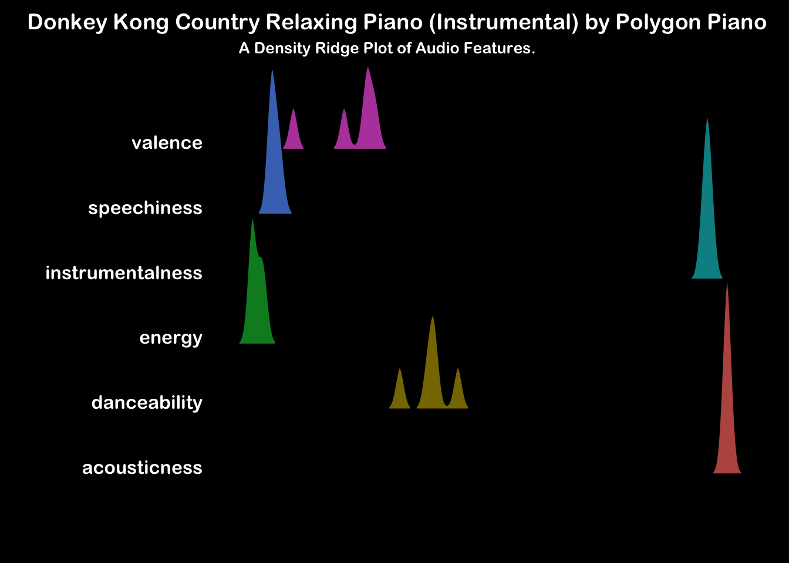

Donkey Kong Country Relaxing Piano (Instrumental)
Piano
Instrumental
Video Game Music
Beautiful zen with a nostalgic twist.
Swinging to Serenity
Donkey Kong Country was a seminal moment for the SNES. I recall when a childhood friend of mine had received it as an Easter present. The graphics were mind blowing, the 2 player couch co-op highly addictive, and the audio certainly made an impression that lasted longer than I had realised. At the time I recall I hadn’t made the transition to the 16-bit generation, and in comparison to my decidedly lacklustre Master System, this looked like the future of video gaming.
Thirty years later, I asked Alexa to play some soothing dog music for the dachshunds while I did the school run - like most dachshunds, they’re the anxious type. As I returned to start work, my nostalgia radar was piqued as a beautiful reimagining of Aquatic Ambience sweetly serenaded the pups. That was my serendipitous introduction to this little melancholy gem.
For a formal description of the audio feature categories presented here, please consult the Spotify Developer API Documentation.
As the album is so short, we see some very tight distributions here and no surprises this time, apart from a middling danceability (ballet perhaps?). All tracks are very high in instrumentalness and acousticness. The album is very low in speechiness as you’d expect. Energy is low throughout. Even where the source material is decidedly spritely, it is played here in a soft and ponderous tempo. A slightly broader distribution in valence and danceability can be observed.
Put this album on when you need to pick through failing code. It will encourage alpha brain waves and keep you from switching context to something less problematic.
Interpreting the Ridge Plot (Click to expand)
These ridge plots show a histogram of the mean audio feature values across each track in the album. Look across the horizontal axis at where the peaks for each feature occur. For example, if the album contains lots of tracks with busy vocals, the speechiness feature will show a peak to the right of the horizontal axis. Conversely, an instrumental album would have a speechiness peak to the left of the horizontal axis but you would also expect it to have a peak to the right of the axis in the instrumentalness feature.
The Tracks
Below are the mean audio feature values for each track. The last row (green) presents a mean summary of the album.
| track_name | danceability | energy | speechiness | acousticness | instrumentalness | valence |
|---|---|---|---|---|---|---|
| Island Swing - Instrumental | 0.3940 | 0.02040 | 0.05620 | 0.9900 | 0.9450 | 0.2720 |
| Forest Frenzy - Instrumental | 0.3770 | 0.01800 | 0.05760 | 0.9950 | 0.9540 | 0.2070 |
| Aquatic Ambiance - Instrumental | 0.3890 | 0.03830 | 0.06950 | 0.9870 | 0.9530 | 0.1030 |
| Simian Segue - Instrumental | 0.3210 | 0.04400 | 0.05730 | 0.9900 | 0.9420 | 0.2570 |
| Gang-Plank Galleon - Instrumental | 0.4400 | 0.01690 | 0.07810 | 0.9950 | 0.9600 | 0.2500 |
| Album Mean | 0.3842 | 0.02752 | 0.06374 | 0.9914 | 0.9508 | 0.2178 |
In the table we get to see the cause of the broader distribution in valence and danceability. Island Swing, Simian Segue and Gang-Plank Galleon drag the mean valence of the album up, while in terms of danceability, Gang-Plank-Galleon is a relative toe tapper.
Island Swing
The album starts with a gorgeous, plaintiff melody, turning to the distinctive saloon-inspired hook that clearly identifies the original game. This track pauses for new material at points so much that I felt it must be a medley. However on reprising the original audio, it does pay a faithful tribute to the original. It finishes as sweetly as it started and sets the scene well for what’s to be expected.
Forest Frenzy
A deeply ponderous cadence interspersed by moments of treble clarity played so softly. The artist really has tempered the frenzy in this forest very well. What remains is a lullaby.
Aquatic Ambience
This track absolutely steals the show. The original was genius, but this is such an exquisite rendition. The movements are played very freely, softening the tighter tempo of the original. This is the track not to miss.
Simian Segue
This is the track from the level select map. The valence rises a fair bit here, which is very understandable considering this must be the most recognisable hook from the game. It’s still a bit playful, even when played so gently. Some powerful major chord shifts making this a decidedly cheery affair.

Gang-Plank Galleon
I have no recollection of this track. It must be owing to the fact that this was the music for the final boss of the game. I was clearly not good enough to make it this far as a kid. The song begins as its title would suggest with a decidedly swashbuckling theme. This soon recedes, handing the limelight to a beautiful melancholy solo that sounds like a distinct song. Once more, reprising the original, it’s clear that this is a pretty faithful reprise of the soundtrack that came with the game.
Overall
Whether or not 1990’s Nintendo is your thing, what a beautiful effort from the artist. I’d recommend listening to their other albums in a similar vein. But this one is my favourite, though I am likely biased due to some formative connection to the source material. But whether serenity is your goal, or maybe you just need to get a baby off to sleep, this little album is the right tool for the job.
For more music to encourage your work efforts, check out Productivity Pulse.